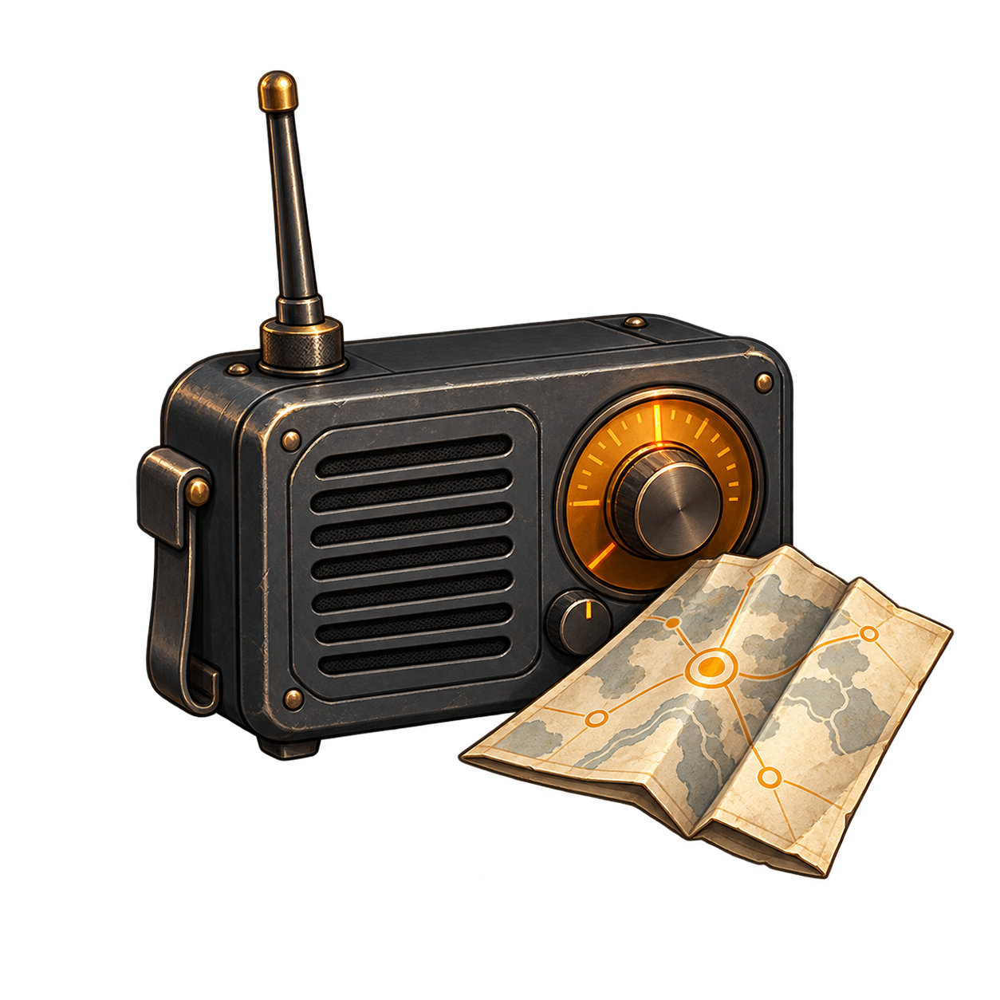

Available
Customize this workspace. The extension download provides the original display features for Discord web.
chrome://extensions
edge://extensions
This messenger layout is a local preview. The extension does not yet replace Discord with this interface. Android and desktop adapters remain in development.